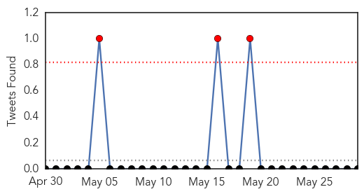
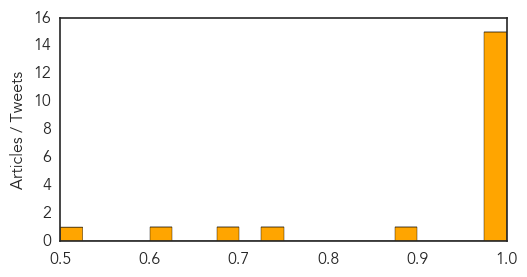
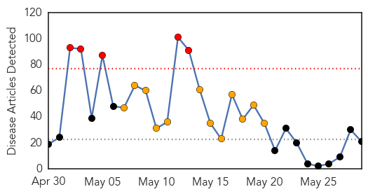
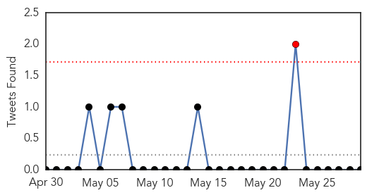
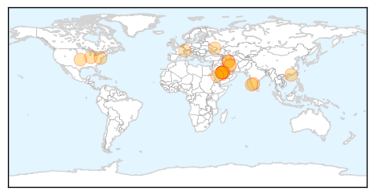
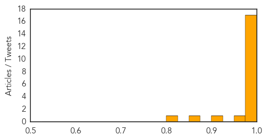

Cholera
30-Day Web Trend
6 alerts, 5 warnings

30-Day Twitter Trend
1 alerts, 0 warnings

Article Locations

Article Confidences
Top Articles:
- 1.000
- Study: Cholera vaccine worked well during outbreak
- 1.000
- WHO Disease Outbreak News on the Ebola Virus Disease in West Africa and Cholera in South Sudan
- 0.999
- South Sudan cholera outbreak kills 23 and infects hundreds
- 0.998
- Oral cholera vaccine highly effective during outbreak in Guinea
- 0.997
- WHO reports 2 cholera deaths in Cameroon
- 0.997
- Hundreds infected by cholera in war-torn South Sudan: WHO
- 0.995
- Oral Cholera Vaccine is Success in Guinea
- 0.995
- A Cholera Vaccine Halts New Cases In A Guinea Epidemic
- 0.995
- Indiablooms - First Portal on Digital News Management
- 0.989
- North West cholera outbreak claims child
- 0.987
- Locals want clean water to fight cholera
- 0.987
- South Sudan Red Cross fights cholera outbreak
- 0.986
- Flash update from MSF in Sierra Leone, South Sudan and the Central African Republic
- 0.985
- Flash update from MSF in Sierra Leone, South Sudan and the Central African Republic
- 0.979
- Ghana Health Service issues cholera outbreak alert
- 0.896
- Government allots UN land to create camps for displaced civilians
- 0.749
- Bloemhof water supply restored
- 0.697
- South Sudanese Children Face Great Danger
- 0.620
- Bloemhof reeling from water failure
- 0.508
- World Report 2014: Haiti
Top Tweets:
-
No tweets found for May 29, 2014
MERS
30-Day Web Trend
5 alerts, 12 warnings

30-Day Twitter Trend
1 alerts, 0 warnings

Article Locations
Article Confidences
Top Articles:
- 1.000
- Public Health Agency of Canada
- 0.999
- MERS misdiagnosis in Illinois man, Mangalorean woman
- 0.999
- Saudi Arabia reports 13 more MERS deaths
- 0.999
- Iran reports first cases of MERS
- 0.998
- MERS virus claims first fatality in Iran
- 0.998
- Illinois MERS Case Turns Out To Be Negative After CDC Investigation; US Still MERS-Free
- 0.998
- CDC Concludes Indiana MERS Patient Did Not Spread Virus to Illinois Business Associate
- 0.998
- CDC: Illinois man didn't have MERS
- 0.997
- US officials backtrack over ‘spread’ of Mers to Illinois man
- 0.997
- Officials take back report of MERS spread in US - Crescent-News
- 0.994
- Indiana MERS patient did not spread virus to Illinois business associate
- 0.993
- Mangalore woman suspected of carrying MERS-Co virus from Saudi tests negative
- 0.992
- Iran announces 1st MERS death
- 0.991
- First MERS death in Iran
- 0.984
- Saudi Arabia reports 3 more MERS cases
- 0.982
- Death toll from MERS reaches 186
- 0.977
- MERS ruled out in Mangalore case
- 0.969
- Iran reports its first 2 cases of MERS virus
- 0.905
- Iran reports 1st MERS casualty
- 0.854
- A New Antiviral Called K22 Has Been Discovered To Fight SARS-Like Virus Epidemics
- 0.815
- Iran confirms first case of MERS
Top Tweets:
-
No tweets found for May 29, 2014